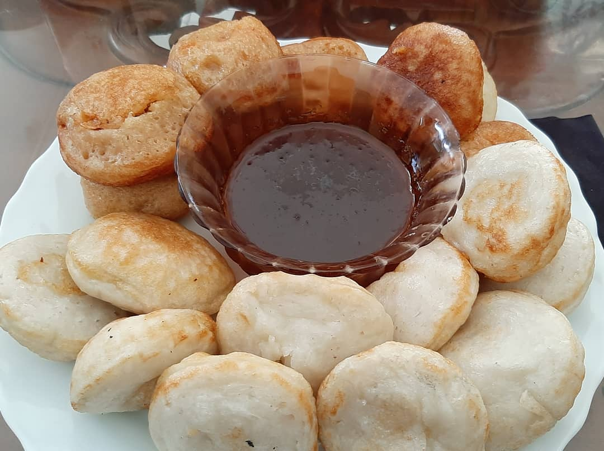
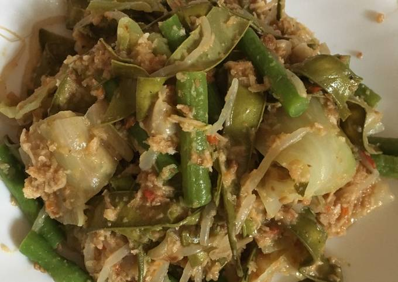
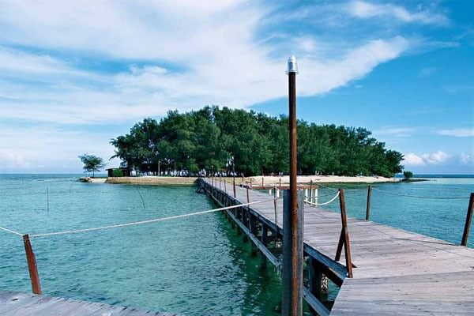

Menurut Babad Dermayu, orang pertama yang tinggal di daerah Indramayu adalah Raden Aryalodra. Raden Aryalodra berasal dari Bagelen, Jawa Tengah, putra dari Tumenggung Gagak Singalodra. Suatu waktu, Raden Wiralodra sedang melakukan tapa brata dan semedi
di perbukitan melaya di kaki Gunung Sumbing. Tiga tahun berselang, Raden Wiralodra mendapat wangsit yang berbunyi, jika ia ingin bahagia berketurunan di kemudian hari, carilah lembah Sungai Cimanuk. Jika sudah di sana, Wiralodra diminta
untuk menebang belukar secukupnya guna mendirikan padukuhan dan menetap di sana. Dengan didampingi Ki Tinggil dan berbekal senjata Cakra Undaksana, berangkatlah mereka ke Sungai Cimanuk. Setelah beberapa waktu, sampailah Raden Wiralodra
dan Ki Tinggil di sebuah sungai yang ia kira adalah Sungai Cimanuk. Mereka pun bermalam di sungai tersebut. Esok paginya, mereka bangun dan melihat ada orang tua yang menegur dan menanyakan tujuan mereka. Menurut riwayat, orang tua
tersebut bernama Ki Buyut Sidum. Setelah Wiralodra menjelaskan tujuan dan maksud mereka, ia baru tahu bahwa sungai tersebut bukanlah Sungai Cimanuk, karena Sungai Cimanuk sudah terlewat. Akhirnya, mereka kembali lagi ke arah timur
laut. Berhari-hari kemudian, Wiralodra melihat sebuah sungai besar. Ia berharap itu adalah Sungai Cimanuk. Namun, lagi-lagi itu bukan Sungai Cimanuk, melainkan Sungai Cipunegara. Mereka pun melanjutkan perjalanan ke arah timur dan
akhirnya menemukan Sungai Cimanuk.
Asal Usul Nama Indramayu
Setelah sampai di Sungai Cimanuk, Raden Wiralodra bersama Ki Tinggil menetap di sebelah barat ujung sungai tersebut. Kian hari, pedukuhan Cimanuk semakin banyak dihuni, salah satunya seorang wanita cantik paripurna bernama Nyi Endang Darma. Nyi Endang
Darma terkenal dengan ilmu kanuragannya. Untuk menyaksikan langsung kehebatan Nyi Endang Darma, Raden Wiralodra mengajak adu kesaktian dengannya. Karena kewalahan menghadapi Raden Wiralodra, Nyi Endang Darma loncat terjun ke dalam
Sungai Cimnuk dan mengakui kekalahannya. Wiralodra kemudian mengajak Darma pulang untuk bersama-sama melanjutkan pembangunan pedukuhan, tetapi Darma menolak. Ia justru berpesan kepada Wiralodra jika kelak pedukuhan ini akan diberi
nama, namakanlah dengan nama Nyi Endang Darma. Akhirnya, untuk mengenang jasa Nyi Endang Darma, pedukuhan ini dinamakan Darma Ayu yang kemudian menjadi Indramayu.
Informasi lainnya seputar Indramayu

Cimplo
makanan ini terbuat dari tepung beras ketan, tape singkong, dan gula putih. Cimplo biasanya dimakan dengan saus gula merah yang sudah dicairkan.
Nasi Lengko
Makanan ini terdiri dari nasi putih, lalu di atasnya diberi irisan tahu goreng, tempe goreng, tauge rebus, mentimun, lalu disiram bumbu kacang yang manis gurih.

Rumbah
Makanan khas Indramayu ini terdiri dari sayuran rebus, berupa, sayur kangkung rebus, tauge, irisan rahu goreng, kacang panjang rebus, dan disiram bumbu kacang.

Pulau Biawak
Biaya Masuk :
400rbu/orang
Lokasi :
Indramayu
Buka :
Setiap Hari
Pulau Biawak sendiri menyimpan lebih dari 300 biawak. Jadi tidak hanya menikmati pesona keindahan wisatanya saja. Anda juga bisa melihat biawak dari dekat dengan memberinya umpan daging maupun ikan.
Waterboom 3 Bindang Firdaus
Biaya Masuk :
25rbu/dewasa
Lokasi :
Terisi, Indramayu
Buka :
Setiap Hari
Tiga Bintang Firdaus Waterpark adalah tempat wisata kolam renang di Indramayu. Di tempat ini, tidak hanya merasakan kolam renang, tetapi dapat mengambil foto di berbagai selfie Instagramable.
Taman Cimanuk
Biaya Masuk :
-
Lokasi :
Indramayu
Buka :
Setiap Hari
Taman Cimanuk dikenal memiliki pemandangan yang asri dan sangat hijau serta fasilitasnya pun lengkap. Pepohonan yang rimbun membuat suasana di taman ikonik Indramayu ini sangat sejuk dan nyaman.
Mangga Harum Manis
Buah ini merupakan buah asli indramayu dan merupakan mangga primadona warga lokal dengan memiliki ciri khas daging yang lebih padat dan juga rasanya yang manis legit.
Mangga Gedong gincu
Buah ini merupakan buah asli indramayu dan merupakan mangga primadona warga lokal dengan memiliki ciri khas daging yang lebih padat dan juga rasanya yang manis legit.
Nadran
Nadran adalah upacara adat nelayan yang bertujuan untuk mensyukuri nikmat atas hasil tangkapan ikan yang melimpah, mengharap peningkatan hasil pada tahun mendatang dan berdoa agar tidak mendapat aral melintang dalam mencari nafkah di laut.
Mapag Sri
Mapag Sri adalah salah satu adat/budaya masyarakat di indramayu untuk menyambut datangnya panen raya sebagai wujud rasa syukur kepada Tuhan yang Mahaesa.
Ngarot
Ngarot adalah salah satu upacara adat untuk menyambut musim garapan sawah yang dilaksanakan masyarakat di Desa Lelea,